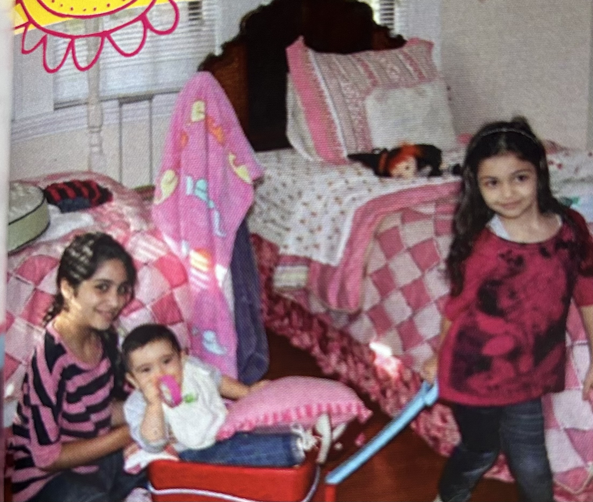
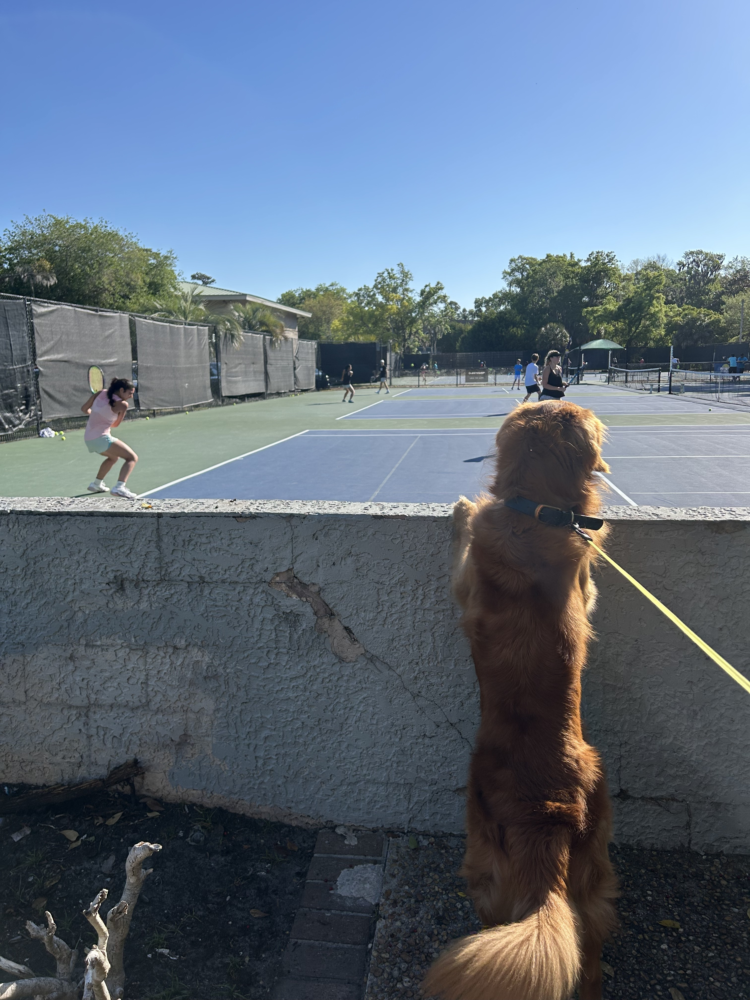
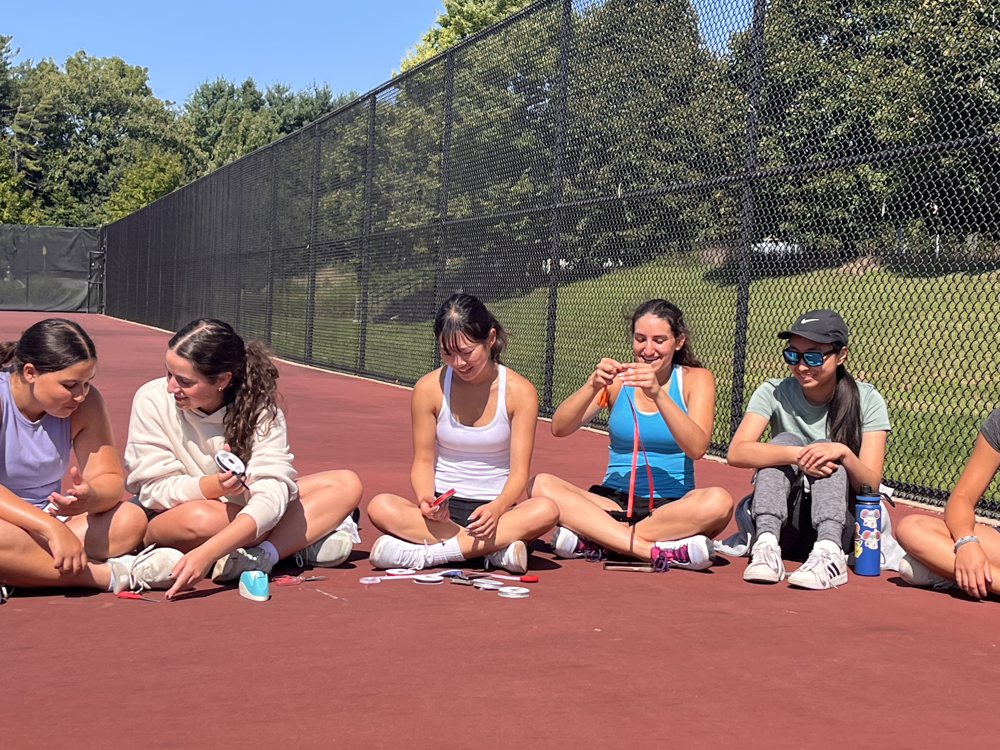
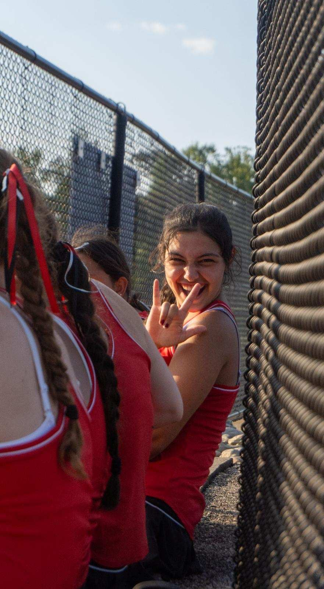

My Story

Growing up with my sisters
I’m the middle child of three sisters. My older sister and I loved dressing up our little sister like she was our real life American Girl doll. Being together made even ordinary days feel special!!
Tennis through my eyes



Tennis started with a chance I took on a sport I had never played before. I put myself out there, made the top ten on my middle school team, and decided to take lessons. As I got better, I also learned how to handle frustration, failure, pressure, and how much discipline it takes to keep going. By high school, I had made the varsity team, but what I loved most was the community around the sport. I wanted every girl to feel excited to show up and know we would support each other. When my teammates voted me captain senior year, I started little traditions, like making the ribbon hair ties (pictured above) that still live on to this day. Tennis helped me grow into a leader who cares about bringing people together, on and off the court.
Philadelphia, My Home
.jpg)
.JPG)
.jpg)
.jpg)
.jpg)
Philadelphia is where I call home, even though I don’t have family living there. I’ve found family through the people I’ve connected with and the culture we share. Toby is the best example. Somewhere along the way, he became the person I introduce as my cousin, and I mean it when I say it. Philly also feels like mine in smaller ways: the excitement around its sports, discovering music from artists like Zinadelphia, and even going to Costco with my mom. It has taught me that home isn’t only about where your relatives live. It can be the people you find and the moments that make you feel like you belong. (And yes, that is a picture with Jared McCain, and yes, that is me in a real race car.)